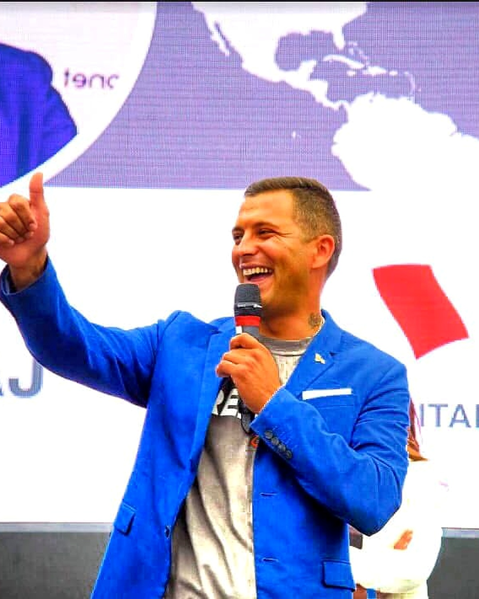
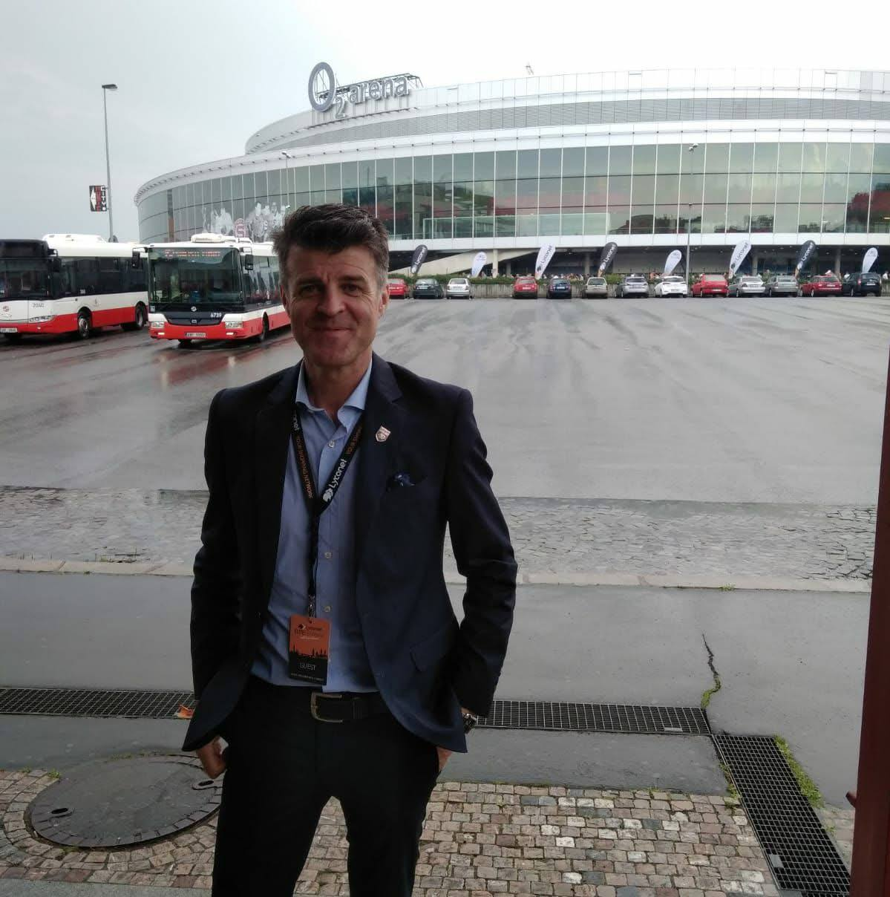
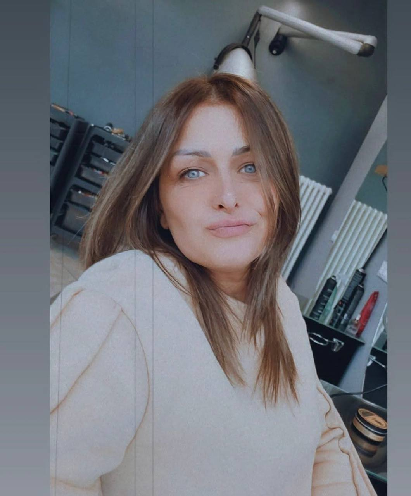
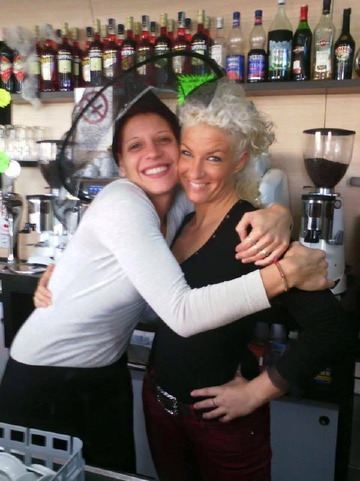
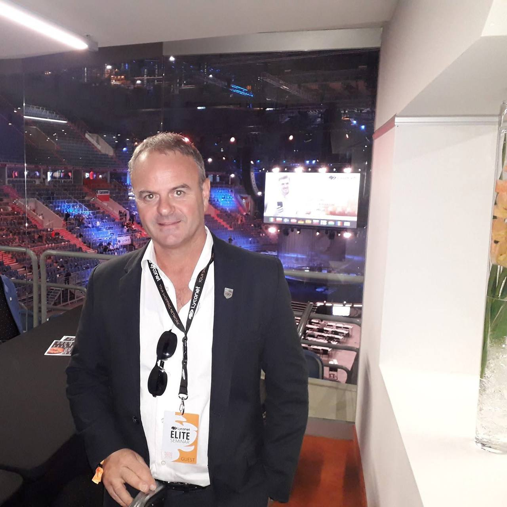

01
MARKETING
Strategie e strumenti digitali per aiutare brand, imprese e persone a crescere.
Sogna. Pianifica. Agisci.
Trasforma le opportunità in un futuro migliore.
Sono Altin Mehmetaj. Imprenditore, consulente marketing e persona appassionata di innovazione, tecnologia e nuove opportunità.
Il mio percorso nasce dal lavoro, dai sacrifici e dalla scelta di ricominciare. Oggi porto quella stessa determinazione nel mondo del marketing, dell'intelligenza artificiale e della crescita digitale.
In pochi minuti ti racconto il mio percorso, le esperienze che mi hanno formato e la visione che porto avanti oggi.
Video generato con AI
Il punto di partenza non determina il punto di arrivo.

Questa non è solo la mia storia. È la storia di una persona che ha sempre creduto che il futuro si costruisca con il coraggio di cambiare.
Sono nato e cresciuto a Shkoder, in Albania. A soli 15 anni ho iniziato a lavorare nella ristorazione. A 19 anni ho lasciato il mio Paese e mi sono trasferito in Italia, ricominciando da zero.
Ho continuato a lavorare nella ristorazione fino a costruire una mia attività e gestire un team di quindici persone. Era un traguardo importante, ma sentivo che mancava qualcosa: il tempo per me, per mio figlio e per le cose che amo.
Nel 2017 ho scelto di ricominciare ancora una volta, entrando nel mondo del marketing. Da allora studio, sperimento e lavoro ogni giorno su marketing, comunicazione, strategie digitali e nuove tecnologie.
Oggi continuo a costruire il mio futuro aiutando persone, professionisti e imprese a guardare avanti.
SCOPRI IL MIO PERCORSO →Lavoro nel settore del marketing e della tecnologia, dove innovazione, intelligenza artificiale e strategie digitali stanno creando nuovi percorsi per persone e imprese.
Strategie e strumenti digitali per aiutare brand, imprese e persone a crescere.
Tecnologie che stanno cambiando il modo di comunicare, creare e lavorare.
Nuove possibilità per chi vuole sviluppare competenze e costruire una presenza digitale professionale.
Persone, aziende e collaboratori che condividono idee, formazione ed esperienze.
Non esistono scorciatoie e non esistono risultati garantiti. Esistono persone, competenze, strumenti e la possibilità di imparare e costruire qualcosa di nuovo.
PARLIAMONE →Hai già una voce, una community e qualcosa da raccontare. Oggi puoi scoprire come trasformare il tuo percorso digitale in nuove possibilità, attraverso contenuti, strumenti, formazione e community.
CURIOSITÀ? SCOPRI COME FUNZIONA →Contenuti. Community. Strategia. Opportunità.
Oggi le aziende hanno bisogno di qualcosa in più della semplice pubblicità. Visibilità, acquisizione, fidelizzazione e nuovi strumenti digitali possono trasformarsi in nuove opportunità di crescita.
SCOPRI PERCHÉ DIVENTARE PARTNER →Fatti trovare e raggiungi nuovi potenziali clienti.
Trasforma l'acquisto in una relazione continuativa.
Scopri nuovi strumenti e opportunità digitali.
Occasioni per incontrare persone, condividere idee e scoprire nuove prospettive.
Una serata dedicata a persone, idee e nuove prospettive. Un'occasione per incontrarsi, confrontarsi e guardare al futuro.
In oltre 9 anni ho avuto l'opportunità di costruire una rete internazionale di persone, clienti, aziende e collaboratori.

Persone unite da una visione.

Esperienze che diventano crescita.

Relazioni che creano nuove opportunità.

Imparare per continuare a crescere.

Il valore di vivere il percorso insieme.

Il valore di vivere il percorso insieme.

Il viaggio continua.
Esperienze reali, storie vere. Le parole di chi ha condiviso con me un percorso, un progetto o una collaborazione.




“Le relazioni vere sono la base di ogni grande risultato.”
— ALTIN MEHMETAJ —Se vuoi conoscermi, capire meglio quello che faccio o semplicemente scambiare due idee, scrivimi. Ti risponderò personalmente.